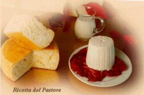
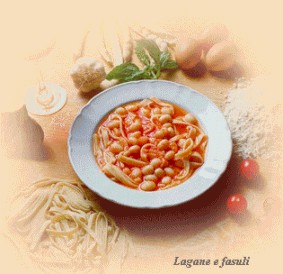
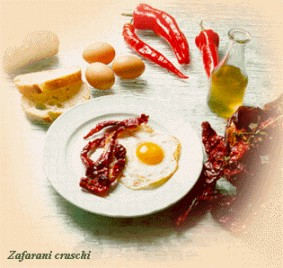
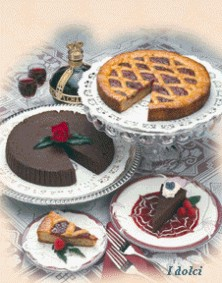
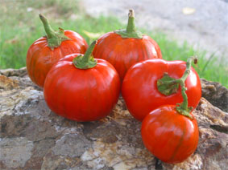
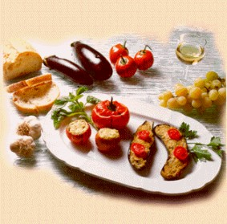
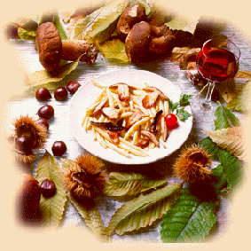
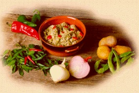

{% extends "base.html" %}
{% block title %}
{% endblock %}
{% block nav %}
Piatti e RicettePiatti e Ricette
{% endblock %}
{% block body %}

Antipasti
- Antipasto alla Rotondese
- Prosciutto del Pollino
- Tris di Prosciutti
- Ricotta del Pastore
- Melanzane e Peperoni "Kijne"

Primi
- Raviolini alle ortiche o con burro e salvia
- Fusilli ai funghi porcini
- Lagane e fasule
- Gnocchetti con ricotta ed erbette del Pollino
- Minestra di "Patane e Vajane"

Secondi
- Capretto con patate e peperoni
- Bocconcini di coniglio al profumo del Pollino
- Filetto di maiale alle bacche di ginepro

Contorni
- "Zafarane Krusche"
- Funghi del Pollino
- Verdure alla griglia

Dessert
- Semifreddo alle mandorle
- Crostata alla frutta
- Ciambella con mele e mandorle

Melanzana Rossa di Rotonda DOP
Il Ristorante da Peppe ha da sempre dato particolare importanza al recupero di antichi prodotti e vecchie ricette.
In Particolare la Melanzana Rossa di Rotonda, antico ortaggio di origine africana che viene coltivato esclusivamente a Rotonda sin dalla fine del 1800, viene proposto in diverse preparazioni dall'antipasto al dolce.

Melanzane
Cucinate in diversi modi. Sia la melanzana "normale" che la Melanzana Rossa di Rotonda DOP.
Da Peppe per valorizzare la Melanzana Rossa di Rotonda DOP, organizza ognni anno il 25 AGOSTO, la
Sagra della Melanzana Rossa.
Scorrendo le foto alcuni delle numerose preparazioni, alcune originali, alcune rivisitate dalle antiche ricette.

Rascatelli ai Funghi Porcini
Il Rascatello è un fusillo lavorato a mano, con l'uso di una stecca di metallo.

Minestra Patane e Vajane
Piatto tradizionale e tipico
Una purea di Patate e Fagioloni verdi, con soffritto e Peperoni secchi.
{% endblock %}
{% block right %}
Prenota il tuo Pranzo al Ristorante da Peppe
PrezziAlla Carta
Mediamente un pranzo (bibite escluse) è di circa
€ 26,00Prenota scrivendo a
Contatti Carte di Credito
AE-DINERS-CARTA SÌ-VISA
Menù Turistici
Menù del Contadino
Prosciutto formaggio e sott'oli
Fusilli ai cardoncelli
Capicollo alle erbette del Pollino
Dolce della Casa
€ 18.50Menù del Pastore
Spaghetti alla chitarra all'ortolana
Tagliata con rughetta e pomodorini
Composè di frutta
€ 12.50
Sagra della Melanzana Rossa
25 Agosto 2008
Serata con degustazione delle ricette a Base di melanzana Rossa di Rotonda
BOOK FOTOGRAFICO Per informazioni rivolgersi al Ristorante da Peppe
{% endblock %}